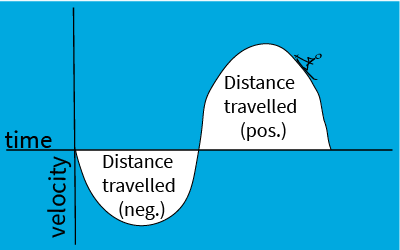
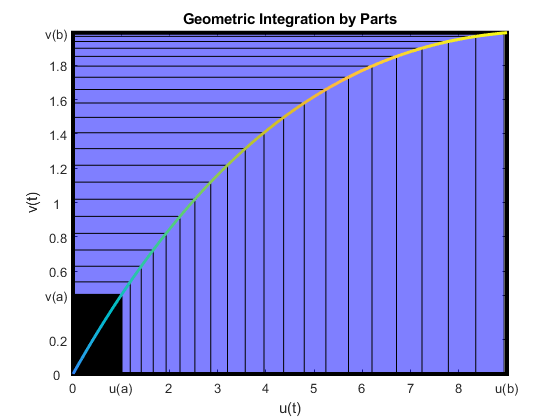
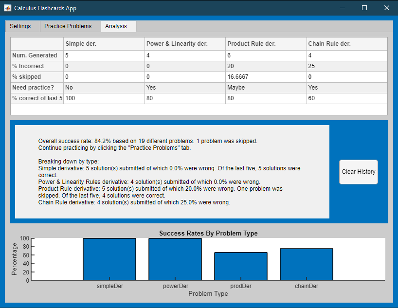

Calculus — Integrals
Information
This curriculum module contains interactive
live scripts
and a MATLAB®
app that teach basic concepts of integral calculus. There is a focus on numerical approximation
and graphical representation as tools for understanding the concepts of
integral calculus.
Calculus — Integrals covers Riemann sum approximations to definite integrals,
indefinite integrals as antiderivatives, and the fundamental theorem of calculus. It
also covers the indefinite integrals of powers, exponentials, natural logarithms,
sines and cosines as well as substitution and integration by parts. Applications
include area and power.
These live scripts can be used as part of a lecture, as activities in an instructional setting,
or as interactive assignments to be completed outside of class. The module is divided into
three folders with the same content offered for different use: Full
Scripts, Visualizations, and Practice.
The instructions inside the live scripts will guide you through the exercises and activities.
Get started with each live script by running it one section at a time. To stop running the script
or a section midway (for example, when an animation is in progress), use the Stop button in the
RUN section of the Live Editor tab in the MATLAB Toolstrip.
Looking for more? Find an issue?
Have a suggestion?
Email the MathWorks online teaching team at
onlineteaching@mathworks.com
Getting Started
 Add-Ons > Get Add-Ons.
Add-Ons > Get Add-Ons.
Products
MATLAB, Symbolic Math Toolbox
Modules
Topic
Full Scripts
Visualizations
Learning Goals
Practice
Antiderivatives
integralAntiderivatives.mlx

vizAntiderivatives.mlx

practiceAntiderivatives.mlx
Fundamental Theorem of Calculus
integralFundamentalTheorem.mlx

vizFundamentalTheorem.mlx

practiceFundamentalTheorem.mlx
Riemann Sums
integralRiemann.mlx

vizRiemann.mlx

None currently. If requested, it can be developed.
Substitution
integralSubstitution.mlx

vizSubstitution.mlx

practiceSubstitution.mlx
Integration by Parts
integralByParts.mlx

vizSubstitution.mlx

practiceByParts.mlx
Calculus Flashcards App
Choose the type of practice.

Solve problems.

Analyze your progress.

Copyright 2022 The MathWorks™, Inc.